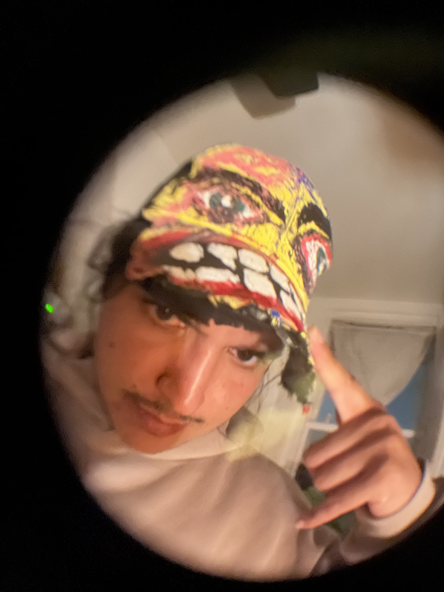

(this leaves your past unchanged)
Welcome to my life. Please remove your shoes, and don't touch that. Here, have a seat. That seat. Please have that specific seat. Great. Just make yourself comfortable, and when will you be leaving?
I'm feeling lucky.
TURN YOUR PHONE SIDEWAYS